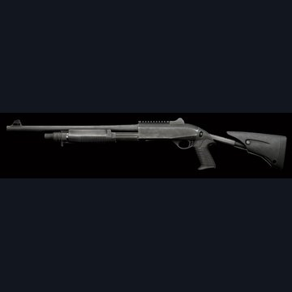
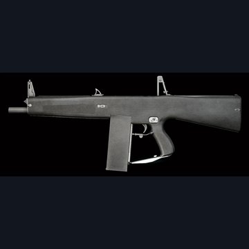
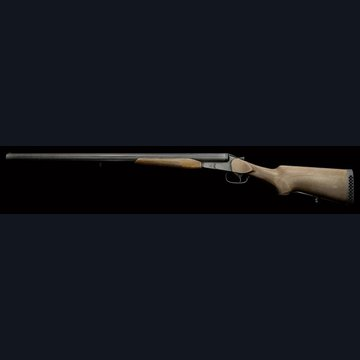
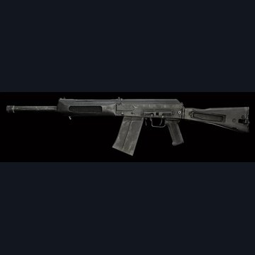
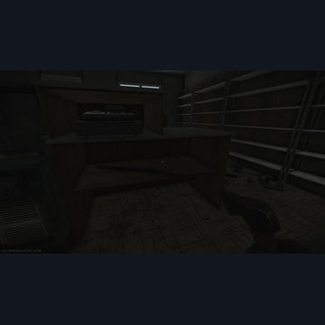
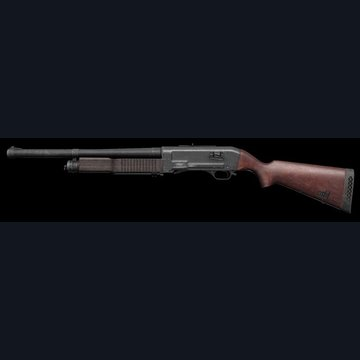

Repères de la famille
Seize fusils à pompe et semi-automatiques : la famille la plus courte en portée et la plus longue en temps de manipulation. Treize des seize armes sont en 12 gauges, une en 20 gauges, une en 23 x 75 mm et une en 7,62 x 54 mm R. La distance efficace publiée ne dépasse jamais 100 mètres, et le recul vertical atteint 663 points sur l’arme la plus lourde de la famille.
Ces armes ont une mécanique de rechargement qui se lit dans les chiffres : la cadence publiée va de 10 à 900 coups par minute. Les valeurs basses sont celles des armes à pompe, où chaque coup demande une manipulation ; les valeurs hautes, celles des armes automatiques comme l’Auto Assault-12.
30 à 60
Ergonomie. La famille est peu maniable, et c’est structurel : le TOZ-106 en 20 gauges culmine à 60, le MP-43 à canons sciés à 50, et le bas de la famille reste à 30.
70 à 100
Distance efficace. Aucune de ces seize armes ne dépasse cent mètres de portée utile publiée. Le combat se décide avant.
13 sur 16
En 12 gauges. Le 12 gauges concentre l’essentiel de la famille, avec cinq références de plombs et de slug dans le catalogue des munitions.
Le coût réel du 12 gauges. Un fusil à pompe se recharge par projectiles, pas par cartouche : le sac de plombs de 12 gauges est une référence à part entière, avec son prix et son poids. C’est le poste de dépense forgotten de cette famille.
Le catalogue de la famille
Les seize fusils à pompe et semi-automatiques de l’export, avec leurs mesures à configuration de base.
| Image | Arme | Calibre | Ergonomie | Recul vertical | Recul horizontal | Cadence (c/min) | Distance efficace (m) | Modes de tir | Munitions | Presets |
|---|---|---|---|---|---|---|---|---|---|---|
 | Carabine monocoup MP-18 7,62 x 54 mm R | 7,62 x 54 mm R | 44 | 295 | 753 | 10 | 100 | Semi-automatique | 9 | 1 |
 | Fusil Benelli M3 Super 90 dual-mode calibre 12 | 12 gauges | 42 | 336 | 595 | 60 | 70 | Semi-automatique, semiauto | 17 | 3 |
 | Fusil automatique MPS Auto Assault-12 Gen 1 calibre 12 | 12 gauges | 43 | 175 | 235 | 330 | 70 | Semi-automatique, Automatique | 17 | 2 |
 | Fusil automatique MPS Auto Assault-12 Gen 2 calibre 12 | 12 gauges | 45 | 173 | 232 | 330 | 70 | Semi-automatique, Automatique | 17 | 5 |
 | Fusil automatique Saiga-12K calibre 12/76 | 12 gauges | 30 | 298 | 526 | 450 | 70 | Semi-automatique, Automatique | 17 | 4 |
 | Fusil automatique Saiga-12K calibre 12/76 (Redline) | 12 gauges | 35 | 298 | 526 | 450 | 70 | Semi-automatique, Automatique | 17 | 1 |
 | Fusil juxtaposé MP-43-1C calibre 12 | 12 gauges | 44 | 279 | 413 | 900 | 100 | Semi-automatique, doublet | 17 | 2 |
 | Fusil juxtaposé à canons sciés MP-43 calibre 12 | 12 gauges | 50 | 279 | 413 | 900 | 100 | Semi-automatique, doublet | 17 | 1 |
 | Fusil semi-automatique MP-153 calibre 12 | 12 gauges | 43 | 348 | 474 | 40 | 70 | Semi-automatique | 17 | 1 |
 | Fusil semi-automatique MP-155 calibre 12 | 12 gauges | 48 | 341 | 457 | 40 | 70 | Semi-automatique | 17 | 2 |
 | Fusil semi-automatique Saiga-12K ver.10 calibre 12/76 | 12 gauges | 30 | 298 | 526 | 40 | 70 | Semi-automatique | 17 | 4 |
 | Fusil à pompe MP-133 calibre 12 | 12 gauges | 40 | 397 | 522 | 30 | 70 | Semi-automatique | 17 | 2 |
 | Fusil à pompe Mossberg 590A1 calibre 12 | 12 gauges | 48 | 421 | 494 | 30 | 70 | Semi-automatique | 17 | 1 |
 | Fusil à pompe Remington Model 870 calibre 12 | 12 gauges | 45 | 397 | 471 | 30 | 70 | Semi-automatique | 17 | 3 |
 | Fusil à pompe TOZ KS-23M 23 x 75 mm | 23 x 75 mm | 38 | 467 | 601 | 30 | 70 | Semi-automatique | 4 | 2 |
 | Fusil à verrou TOZ-106 calibre 20 | 20 gauges | 60 | 663 | 585 | 30 | 70 | Semi-automatique | 11 | 1 |
La colonne Munitions recense le nombre de cartouches compatibles dans le catalogue des munitions. Pour les armes à pompe, ce chiffre inclut les projectiles en sacs, dont le poids et le prix pèsent autant que la munition elle-même.
Presets publiés
Trente-cinq presets sont rattachés aux armes de cette famille, dont le preset par défaut de chacune. Les modifications apportées à une arme à pompe portent en général sur la crosse et la pompe, deux pièces qui changent le confort autant que les chiffres.
| Preset | Ergonomie | Recul vertical | Recul horizontal | Précision (MOA) | État |
|---|---|---|---|---|---|
| Fusil Benelli M3 Super 90 dual-mode calibre 12 BOSS XeFusil Benelli M3 Super 90 dual-mode calibre 12 | 35 | 165 | 292 | 31.99 | preset publié |
| Fusil Benelli M3 Super 90 dual-mode calibre 12 Jusqu'à l'aubeFusil Benelli M3 Super 90 dual-mode calibre 12 | 35 | 165 | 292 | 31.99 | preset publié |
| Fusil automatique MPS Auto Assault-12 Gen 1 calibre 12 TambourFusil automatique MPS Auto Assault-12 Gen 1 calibre 12 | 27 | 165 | 221 | 41.62 | preset publié |
| Fusil automatique MPS Auto Assault-12 Gen 2 calibre 12Fusil automatique MPS Auto Assault-12 Gen 2 calibre 12 | 38 | 163 | 218 | 41.62 | preset publié |
| Fusil automatique MPS Auto Assault-12 Gen 2 calibre 12 P1x42Fusil automatique MPS Auto Assault-12 Gen 2 calibre 12 | 25 | 164 | 220 | 41.97 | preset publié |
| Fusil automatique MPS Auto Assault-12 Gen 2 calibre 12 TerraGroup LabsFusil automatique MPS Auto Assault-12 Gen 2 calibre 12 | 25 | 164 | 220 | 41.97 | preset publié |
| Fusil automatique MPS Auto Assault-12 Gen 2 calibre 12 UH-1Fusil automatique MPS Auto Assault-12 Gen 2 calibre 12 | 27 | 159 | 213 | 41.97 | preset publié |
| Fusil automatique Saiga-12K calibre 12/76 COMP M4Fusil automatique Saiga-12K calibre 12/76 | 31 | 170 | 300 | 20.64 | preset publié |
| Fusil automatique Saiga-12K calibre 12/76 UH-1Fusil automatique Saiga-12K calibre 12/76 | 39 | 156 | 276 | 20.64 | preset publié |
| Fusil automatique Saiga-12K calibre 12/76 XPS3-0Fusil automatique Saiga-12K calibre 12/76 | 37 | 158 | 279 | 20.64 | preset publié |
| Fusil juxtaposé MP-43-1C calibre 12 ShortFusil juxtaposé MP-43-1C calibre 12 | 43 | 259 | 384 | 17.89 | preset publié |
| Fusil semi-automatique MP-155 calibre 12 UltimaFusil semi-automatique MP-155 calibre 12 | 65 | 232 | 311 | 38.53 | preset publié |
| Fusil semi-automatique Saiga-12K ver.10 calibre 12/76 FLIR RS-32Fusil semi-automatique Saiga-12K ver.10 calibre 12/76 | 10 | 209 | 368 | 20.64 | preset publié |
| Fusil semi-automatique Saiga-12K ver.10 calibre 12/76 NERFGUNFusil semi-automatique Saiga-12K ver.10 calibre 12/76 | 10 | 209 | 368 | 20.64 | preset publié |
| Fusil semi-automatique Saiga-12K ver.10 calibre 12/76 Type-340Fusil semi-automatique Saiga-12K ver.10 calibre 12/76 | 41 | 159 | 281 | 20.64 | preset publié |
| Fusil à pompe MP-133 calibre 12 TacticalFusil à pompe MP-133 calibre 12 | 53 | 270 | 355 | 37.84 | preset publié |
| Fusil à pompe Remington Model 870 calibre 12 BreacherFusil à pompe Remington Model 870 calibre 12 | 80 | 306 | 363 | 36.12 | preset publié |
| Fusil à pompe Remington Model 870 calibre 12 HammerFusil à pompe Remington Model 870 calibre 12 | 61 | 393 | 466 | 36.12 | preset publié |
| Fusil à pompe TOZ KS-23M 23 x 75 mm DrozdFusil à pompe TOZ KS-23M 23 x 75 mm | 60 | 364 | 469 | 41.28 | preset publié |
Acquisition et disponibilité
Aucune des seize armes de cette famille n’a d’offre marchande dans l’instantané : la famille s’acquiert en raid, par tâche ou au marché. Le tableau d’acquisition est donc vide.
Aucune vente en magasin relevée pour cette famille dans l’instantané consulté.
Cette absence d’offre est cohérente avec le profil de la famille : des armes courtes, lourdes, à la munition volumineuse, dont le rapport prix/utilité décourage la production en série.
Comment s’équiper
- Plombs ou slug : deux façons de tirer. Le catalogue des munitions recense cinq références de cartouches à plombs et à slug en 12 gauges. Le plombs multiplie les projectiles et donc la surface touchée ; le slug est un projectile unique, plus lourd et plus pénétrant. C’est le même arbitrage que dans le jeu, appliqué à la facture.
- Le semi-automatique coûte moins cher à tirer. Les armes à pompe demandent une manipulation par coup : la cadence publiée de 10 à 60 coups par minute le dit mieux qu’un tableau. Les semi-automatiques et automatiques de la famille montent à 900, et leur prix d’achat comme leur précision enrage plus vite.
- La distance utile se compte en mètres. À 70 ou 100 mètres de distance efficace, l’arme n’a plus de portée : cela impose de fermer la distance, de choisir l’angle, et de ne pas payer le prix d’une optique longue pour une arme qui ne l’exploite pas.
Sources et limites
Les chiffres viennent de l’export communautaire du 18 novembre 2026. Les indications de manipulation sont déduites des cadences et des modes de tir publiés dans cet export ; les guides communautaires qui conseillent cette famille sont lus comme des avis, pas comme des données.
- Tarkov.dev — catalogue des armes et de leurs presetsDonnées communautaires
- Tarkov.dev — items, équipement, munitions et skills (PvP ; autres modes via le catalogue)Données communautaires
- Tarkov.dev — catalogue officiel des exports JSONDonnées communautaires
- Escape from Tarkov WikiWiki communautaire
- KappaGuide — outils, cartes et guidesOutil communautaire